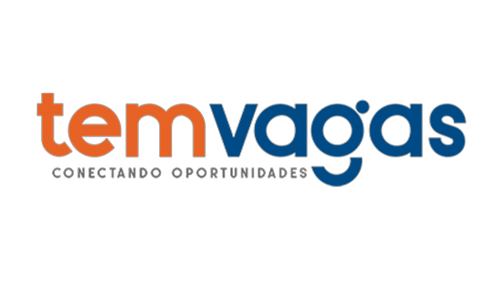
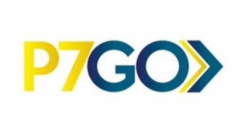

<div class="modal fade" id="professionalJourneyModal" tabindex="-1" role="dialog" aria-hidden="true">
    <div class="modal-dialog modal-xl" role="document">
      <div class="modal-content">
        <div class="modal-header">
          <button type="button" class="btn btn-danger" data-bs-dismiss="modal" aria-label="Close">
            <span aria-hidden="true" class="fa fa-close "></span>
          </button>
        </div>
        <div class="modal-body">
            <div id="carouselprofessionalJourneyModal" data-bs-theme="dark" class="carousel slide">
                <div class="carousel-indicators">
                  <button type="button" data-bs-target="#carouselprofessionalJourneyModal" data-bs-slide-to="0" class="active" aria-current="true" aria-label="Slide 1"></button>
                  <button type="button" data-bs-target="#carouselprofessionalJourneyModal" data-bs-slide-to="1" aria-label="Slide 2"></button>
                  <button type="button" data-bs-target="#carouselprofessionalJourneyModal" data-bs-slide-to="2" aria-label="Slide 3"></button>
                  <button type="button" data-bs-target="#carouselprofessionalJourneyModal" data-bs-slide-to="3" aria-label="Slide 4"></button>
                  <button type="button" data-bs-target="#carouselprofessionalJourneyModal" data-bs-slide-to="4" aria-label="Slide 5"></button>
                  <button type="button" data-bs-target="#carouselprofessionalJourneyModal" data-bs-slide-to="5" aria-label="Slide 6"></button>
                </div>
                <div class="carousel-inner px-5 py-5 ">
                    <div class="container px-5 py-5 ">
                  <div class="carousel-item active">
                    <div class="row">
                    <div class="col-12 col-lg-3">
                    
                    </div>
                    <div class="col-12 col-lg-9">
                      <h5>Analista de desenvolvimento de sistemas – Banco Modal (2022-Atualmente)</h5>
                      <p>Responsável por analisar, desenvolver e testar aplicações usando tecnologias como
                         .Net, Kafka, Redis, Mongo, Banco Relacional Sql, PL/Sql e API Gateway. 
                         Participei de reuniões diárias e quinzenais para gerenciamento de tarefas, 
                         projeção de entrega de sprint e negociações com provedores externos.
                          Implementei CI/CD com Azure DevOps Pipeline, 
                          Kubertnets para micros serviços e utilizei Open Search e Grafana para observabilidade.
                          Iniciei como externo na área de Open Finance
                          e fui transferido para a área de Prevenção a Fraudes, 
                          alcançando resultados significativos nesse último ano de atuação. 
                        </p>
                    </div>
                    </div>
                  </div>
                  <div class="carousel-item">
                    <div class="row">
                        <div class="col-12 col-lg-3 pt-2 mt-5">
                        
                        </div>
                        <div class="col-12 col-lg-9">
                          <h5>Desenvolvedor de Back End Junior – VaiVoa (2021-2022)</h5>
                          <p>Aceleração profissional e inserção de mão de obra qualificada no Modal Mais, 
                            com foco em tecnologias como C# .NET, Entity Framework, Linq, XUnit, Asp.Net, Git, Sql, 
                            PostgreSQL, RabbitMq, Kafka, Redis, Mongo, ElasticSearch, Kibana, Azure, Azure DevOps, 
                            Azure Function e AWS. Trabalhei com metodologias SCRUM, XP, Pair Programming e KANBAN, 
                            aplicando boas práticas como DRY, SOLID, Clean Code, Teste Unitário, Teste de Integração, 
                            Teste de Carga, TDD e DDD. Finalizei com desenvolvimento de projetos no Banco Modal.</p>
                        </div>
                        </div>
                  </div>
                  <div class="carousel-item">
                    <div class="row">
                        <div class="col-12 col-lg-3 pt-2 mt-5">
                        
                        </div>
                        <div class="col-12 col-lg-9">
                          <h5>Auxiliar de TI – Aladim Distribuidora de Produtos de Perfumaria (2020-2020)</h5>
                          <p>Responsável pelo suporte técnico em questões técnicas e administrativas relacionadas ao TI na Bahia.
                             Prestei suporte presencial e remoto aos usuários, avaliei e corrigi atividades dos usuários,
                              instruí e facilitei o uso do sistema, além de realizar análises de rede e dados.</p>
                        </div>
                        </div>    
                  </div>
                  <div class="carousel-item">
                    <div class="row">
                        <div class="col-12 col-lg-3">
                        
                        </div>
                        <div class="col-12 col-lg-9">
                          <h5>Estágio – Temvagas.net (2020-2020)</h5>
                          <p>Desenvolvimento front-end com Vue.js, Quasar.js e consumação de APIs antigas, 
                            além de experiência em plataformas de desenvolvimento low code.</p>
                        </div>
                        </div>    
                  </div>
                  <div class="carousel-item">
                    <div class="row">
                        <div class="col-12 col-lg-3">
                        
                        </div>
                        <div class="col-12 col-lg-9">
                          <h5>Estágio – Toro ERP</h5>
                          <p>Desenvolvimento na IDE Delphi, na linguagem Object Pascal. 
                            Planejamento e desenvolvimento de banco de dados em FIREBIRD, 
                            com normalização para um ERP voltado para vendas, estoque e contabilidade fiscal.</p>
                        </div>
                        </div>    
                  </div>
                  <div class="carousel-item">
                    <div class="row">
                        <div class="col-12 col-lg-3">
                        
                        </div>
                        <div class="col-12 col-lg-9">
                          <h5>Estágio - P7GO (2020-2020)</h5>
                          <p>Experiência de desenvolvimento em modo XP com Javascript no framework
                             Adonis.Js em back end para realizar um REST API, 
                             e front end utilizando React com a biblioteca do react-router-dom.</p>
                        </div>
                        </div>    
                  </div>
                </div>
                <button class="carousel-control-prev mr-5" type="button" data-bs-target="#carouselprofessionalJourneyModal" data-bs-slide="prev">
                  <span class="carousel-control-prev-icon" aria-hidden="true"></span>
                  <span class="visually-hidden">Previous</span>
                </button>
                <button class="carousel-control-next ml-5" type="button" data-bs-target="#carouselprofessionalJourneyModal" data-bs-slide="next">
                  <span class="carousel-control-next-icon" aria-hidden="true"></span>
                  <span class="visually-hidden">Next</span>
                </button>
            </div>
            </div>
            </div>
        <div class="modal-footer">
          <button type="button" class="btn btn-danger" data-bs-dismiss="modal">Close</button>
        </div>
      </div>
    </div>
  </div>